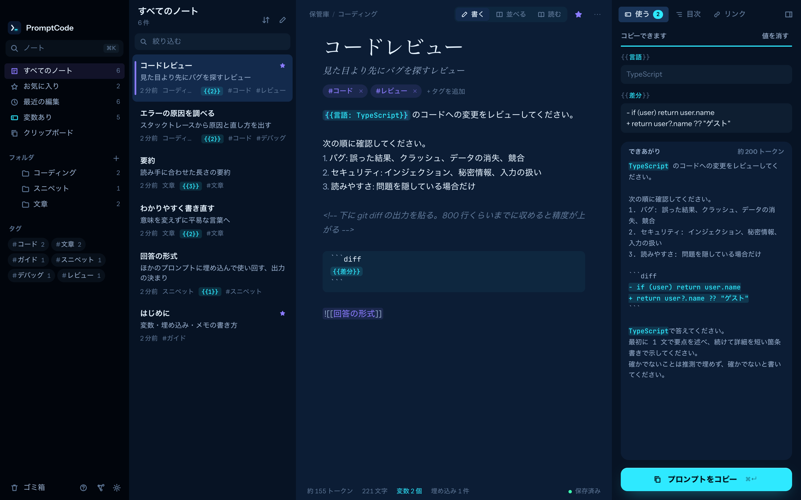
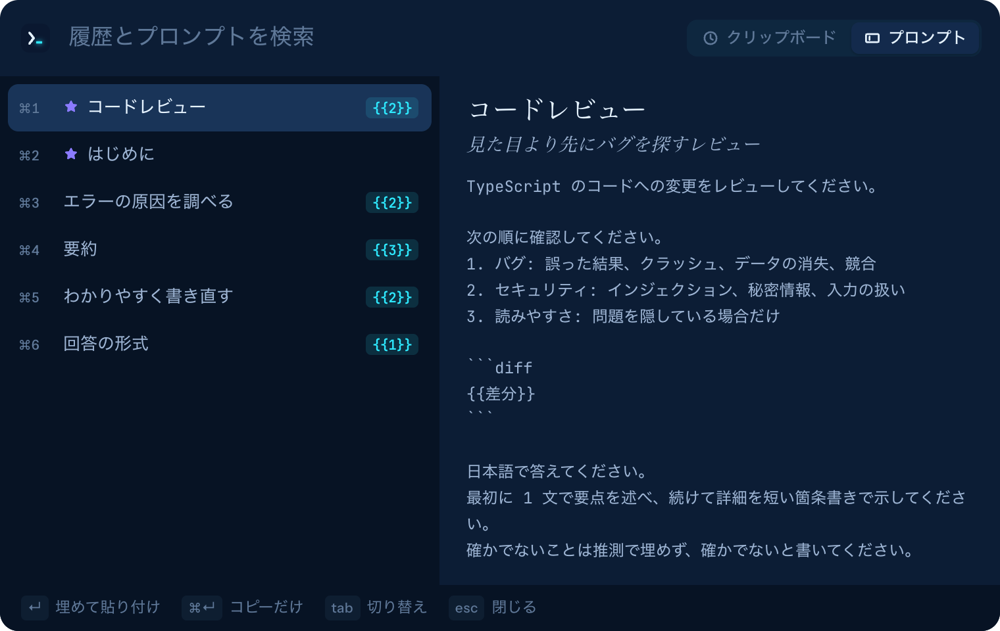

Prompt Code for macOS
プロンプトを、
もう打ち直さない。
AI へのプロンプトをテンプレートとして書いて、整理して、使い回すための Markdown エディタです。埋める変数、使い回す部品、どのアプリからでも呼び出せる貼り付けウィンドウを備えています。プロンプトは Mac の中に、ただの .md ファイルとして残ります。

01 / プロンプトの書き方
毎回打ち直さず、
ひな形として持っておく。
Markdown に 3 つの書き方を足すだけで、ノートが「埋めてコピーするプロンプトテンプレート」になります。それ以外はふつうの Markdown です。
{{テーマ}}について {{読み手: エンジニア}}向けに {{口調: 丁寧 | くだけた}}口調で説明して。
変数
入力欄、既定値つき、選択肢の 3 種類です。「使う」パネルが入力欄を作り、できあがったプロンプトを入力に合わせて表示します。⌘↵ でコピーできます。
このプルリクエストをレビューして。
![[回答の形式]]
埋め込み
人格の設定や出力の決まりを 1 つのノートにまとめ、どのプロンプトにも埋め込めます。中身はコピーするときに入ります。
会議の内容を要約して。
<!-- 文字起こしを先に
貼るとうまくいく -->
自分用のメモ
HTML コメントはファイルに残り、コピーするときに消えます。モデルには届きません。
02 / クイックペースト
いま入力しているアプリに、
そのまま貼る。
どのアプリにいても ⌥⌘V を押すと、小さなウィンドウにクリップボードの履歴とプロンプトが並びます。選ぶと、入力していた場所に貼り付けます。
- 先に値を埋める。変数のあるプロンプトは、その場で値を入れてから貼り付けられます。
- メニューバーにクリップボード履歴。直近 200 件のコピーを残します。パスワードマネージャが「隠す」印を付けたコピーは記録しません。
- キーボードだけで完結。↵ で貼り付け、⌘↵ でコピーのみ、⌘1〜⌘9 でその行を貼り付けます。

03 / 機能
ノートアプリとスニペット管理の、
いいところを 1 つに。
書くためのリンク、バックリンク、グラフ、コマンドパレット。プロンプトのスニペット管理に使うフォルダ、タグ、お気に入り、ワンクリックのコピー。
リンクとタグ
補完つきの [[ノート]] リンク、バックリンク、#タグ、グラフ表示。ノートの名前を変えると、リンクも書き換わります。
すばやい移動
⌘K でノートを開き、> でコマンドを実行し、⇧⌘F ですべてのノートの中身を検索します。
ファイルはそのまま
保管庫は YAML の frontmatter つき .md ファイルを入れたフォルダです。ほかのアプリで編集しても、すぐに反映されます。
書く・読む
コードブロックに色が付く Markdown エディタと、⌘E で切り替える読むための表示。
データは Mac の外に出ない
アカウントも利用状況の送信も無く、ネットワークにも接続しません。削除したノートは保管庫の .trash/ に移ります。
小さくてネイティブ
ディスク上は約 12 MB。システムの WebKit を使う Tauri で作っています。ライト・ダーク、5 色のアクセント、日本語と英語に対応。
04 / キー操作
手をキーボードから離さずに。
| ⌥⌘V（どこでも） | クイックペースト（設定で変更可） |
| ⌘K | ノートを開く（> でコマンド） |
| ⌘N / ⇧⌘N | 新しいノート / 新しいフォルダ |
| ⇧⌘F | すべてのノートを検索 |
| ⌘↵ | 変数を埋める。パネルの中ではコピー |
| ⇧⌘C | いまの値でプロンプトをコピー |
| ⌘E | 書く・読むを切り替え |
| ⌘\ | サイドバーの表示を切り替え |
| ⌘G | グラフ |
| ⌘D | ノートを複製 |
| ⌘⌫ | ノートをゴミ箱へ（トーストから取り消し） |
| ⌘, | 設定 |
05 / ダウンロード
Prompt Code を入手する。
お使いの Mac に合う DMG を開き、Prompt Code を「アプリケーション」フォルダへドラッグしてください。初めて起動すると使い方のガイドが開きます。
- Developer ID で署名し、Apple の公証を通してあるので、警告なしで開けます。macOS 11 以降で動きます。
- ほかのアプリに貼り付けるには、初回に「システム設定 › プライバシーとセキュリティ › アクセシビリティ」での許可が要ります。許可しなくても、クイックペーストはコピーまで行うので ⌘V で貼り付けられます。
- ウィンドウを閉じてもメニューバーに残ります。終了はメニューバーのメニューか ⌘Q から行います。
ソースコードからビルドする
git clone https://github.com/karamage/prompt-code.git cd prompt-code bun install bun run app:build # → src-tauri/target/release/bundle/macos/
06 / よくある質問
よくある質問。
- プロンプトはどこに保存されますか？
- Markdown ファイルを入れたフォルダに保存します。既定は
~/PromptCodeで、設定から別のフォルダを選べます。ふつうのフォルダなので、バックアップや同期、git での管理もそのままできます。 - プロンプトがどこかに送られることはありますか？
- ありません。アカウントも利用状況の送信も無く、ネットワークにも接続しません。内部のサーバーは
127.0.0.1でだけ待ち受け、起動時に作るトークンが無いと応答しません。 - Obsidian の保管庫で使えますか？
- YAML の frontmatter と
[[リンク]]を使ったただの.mdファイルを読むので、Markdown のノートが入ったフォルダなら、設定（⌘,）で保管庫に選べます。 - ふつうのスニペット管理アプリとは何が違いますか？
- ふつうのスニペット管理アプリは決まった文章を貼り付けます。Prompt Code は AI プロンプトのテンプレート向けに作っています。既定値や選択肢つきの変数は貼り付ける前に埋める入力欄になり、共通の部品はコピーするときに埋め込まれ、自分用のメモはモデルに送る前に取り除かれます。
- どの AI ツールで使えますか？
- どれでも使えます。できあがった文章をコピーするか貼り付けるだけなので、チャットアプリ、IDE、ターミナル、ブラウザを問いません。
- 料金はかかりますか？
- かかりません。MIT ライセンスのオープンソースです。